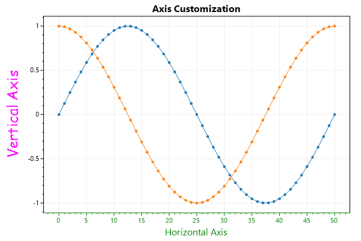
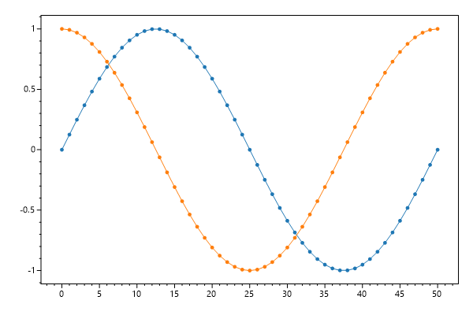
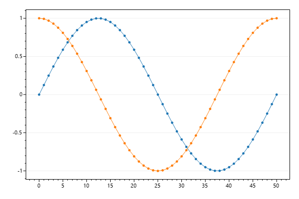
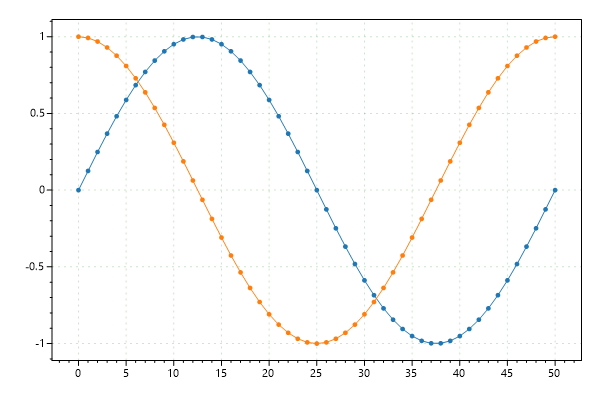
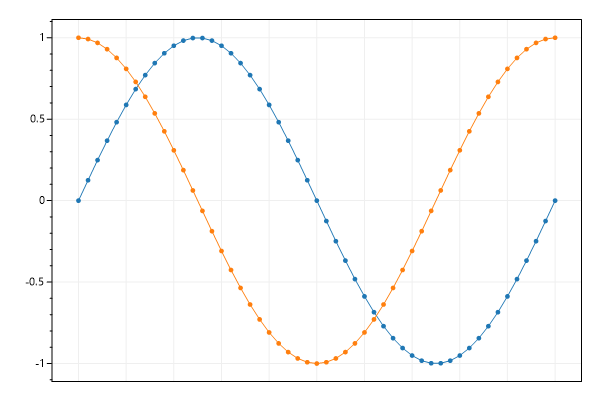
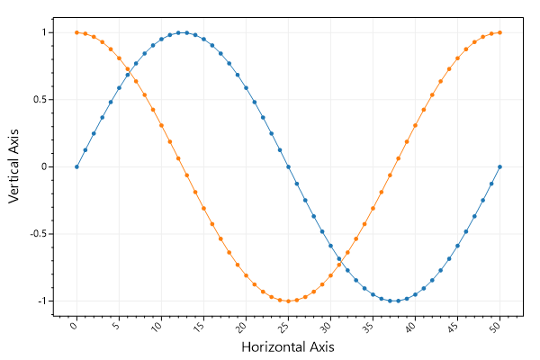
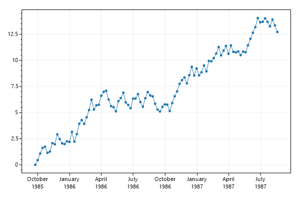

ScottPlot Cookbook: Axis and Ticks
⚠️ Documentation is version-specific: This page was generated forScottPlot 4.1.4-beta
Additional documentation and more version-specific cookbooks are on the ScottPlot Website
Axis Customizations
Axes can be customized different ways. Axis labels and colors are the most common types of customizations.var plt = new ScottPlot.Plot(600, 400);
// plot sample data
plt.AddSignal(DataGen.Sin(51));
plt.AddSignal(DataGen.Cos(51));
// These shortcuts are the easiest way to set axis labels
plt.XLabel("Horizontal Axis");
plt.YLabel("Vertical Axis");
plt.Title("Axis Customization");
// Axes labels can be further customized for any axis
plt.YAxis.Label("Vertical Axis", Color.Magenta, size: 24, fontName: "Comic Sans MS");
// This method will set the color of axis labels, lines, ticks, and tick labels
plt.XAxis.Color(Color.Green);
plt.SaveFig("Axis_label.png");

Disable Grid
Visibility of primary X and Y grids can be set using a single method.var plt = new ScottPlot.Plot(600, 400);
// plot sample data
plt.AddSignal(DataGen.Sin(51));
plt.AddSignal(DataGen.Cos(51));
// hide grids
plt.Grid(false);
plt.SaveFig("axis_gridDisableAll.png");

Disable Vertical Grid
Grid line visibility can be controlled for each axis individually. Use this to selectively enable grid lines only for the axes of interest. Keep in mind that vertical grid lines are controlled by horizontal axes.var plt = new ScottPlot.Plot(600, 400);
// plot sample data
plt.AddSignal(DataGen.Sin(51));
plt.AddSignal(DataGen.Cos(51));
// each axis has its own visibility controls
plt.XAxis.Grid(false);
plt.SaveFig("axis_gridDisableOne.png");

Grid Style
Common grid line configurations are available.var plt = new ScottPlot.Plot(600, 400);
// plot sample data
plt.AddSignal(DataGen.Sin(51));
plt.AddSignal(DataGen.Cos(51));
// these helper methods set grid
plt.Grid(color: Color.FromArgb(50, Color.Green));
plt.Grid(lineStyle: LineStyle.Dot);
plt.SaveFig("asis_gridConfigure.png");

Disable X Ticks
Ticks can be hidden on a single axis.var plt = new ScottPlot.Plot(600, 400);
// plot sample data
plt.AddSignal(DataGen.Sin(51));
plt.AddSignal(DataGen.Cos(51));
// hide just the horizontal axis ticks
plt.XAxis.Ticks(false);
plt.SaveFig("ticks_hidex.png");

Rotated X Ticks
Horizontal tick labels can be rotated as desired.var plt = new ScottPlot.Plot(600, 400);
// plot sample data
plt.AddSignal(DataGen.Sin(51));
plt.AddSignal(DataGen.Cos(51));
plt.XAxis.Label("Horizontal Axis");
plt.YAxis.Label("Vertical Axis");
// rotate horizontal axis tick labels
plt.XAxis.TickLabelStyle(rotation: 45);
plt.SaveFig("ticks_rotated.png");

Rotated Y Ticks
Vertical tick labels can be rotated as desired.var plt = new ScottPlot.Plot(600, 400);
// plot sample data
plt.AddSignal(DataGen.Sin(51));
plt.AddSignal(DataGen.Cos(51));
plt.XAxis.Label("Horizontal Axis");
plt.YAxis.Label("Vertical Axis");
// rotate horizontal axis tick labels
plt.YAxis.TickLabelStyle(rotation: 45);
plt.SaveFig("ticks_rotatedY.png");
Plotting DateTime Data
This example shows how to display DateTime data on the horizontal axis. Use DateTime.ToOADate() to convert DateTime[] to double[], plot the data, then tell the axis to format tick labels as dates.var plt = new ScottPlot.Plot(600, 400);
// create data sample data
DateTime[] myDates = new DateTime[100];
for (int i = 0; i < myDates.Length; i++)
myDates[i] = new DateTime(1985, 9, 24).AddDays(7 * i);
// Convert DateTime[] to double[] before plotting
double[] xs = myDates.Select(x => x.ToOADate()).ToArray();
double[] ys = DataGen.RandomWalk(myDates.Length);
plt.AddScatter(xs, ys);
// Then tell the axis to display tick labels using a time format
plt.XAxis.DateTimeFormat(true);
plt.SaveFig("ticks_dateTime.png");
